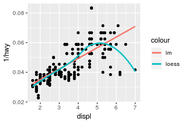
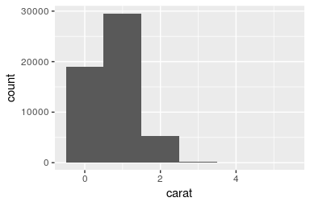
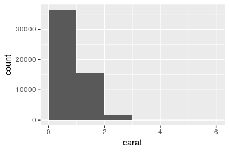

I’m very pleased to announce the release of ggplot2 2.1.0, scales 0.4.0, and gtable 0.2.0. These are set of relatively minor updates that fix a whole bunch of little problems that crept in during the last big update. The most important changes are described below.
When mapping an aesthetic to a constant the default guide title is the name of the aesthetic (i.e. “colour”), not the value (i.e. “loess”). This is a really handy technique for labelling individual layers:
ggplot(mpg, aes(displ, 1 / hwy)) +
geom_point() +
geom_smooth(method = lm, aes(colour = "lm"), se = FALSE) +
geom_smooth(aes(colour = "loess"), se = FALSE)
#> `geom_smooth()` using method = 'loess' and formula 'y ~ x'
stat_bin() (which powers geom_histogram() and geom_freqpoly()), has been overhauled to use the same algorithm as ggvis. This has considerably better parameters and defaults thanks to the work of Randall Pruim. Changes include:
Better arguments and a better algorithm for determining the origin. You can now specify either boundary (i.e. the position of the left or right side) or the center of a bin. origin has been deprecated in favour of these arguments.
drop is deprecated in favour of pad, which adds extra 0-count bins at either end, as is needed for frequency polygons. geom_histogram() defaults to pad = FALSE which considerably improves the default limits for the histogram, especially when the bins are big.
The default algorithm does a (somewhat) better job at picking nice widths and origins across a wider range of input data.
You can see the impact of these changes on the following two histograms:
ggplot(diamonds, aes(carat)) +
geom_histogram(binwidth = 1)
ggplot(diamonds, aes(carat)) +
geom_histogram(binwidth = 1, boundary = 0)
All layer functions (geom_*() + stat_*()) functions now have a consistent argument order: data, mapping, then geom/stat/position, then ..., then layer specific arguments, then common layer arguments. This might break some code if you were relying on partial name matching, but in the long-term should make ggplot2 easier to use. In particular, you can now set the n parameter in geom_density2d() without it partially matching na.rm.
For geoms with both colour and fill, alpha once again only affects fill. alpha was changed to modify both colour and fill in 2.0.0, but I’ve reverted it to the old behaviour because it was causing pain for quite a few people.
You can see a full list of changes in the release notes.